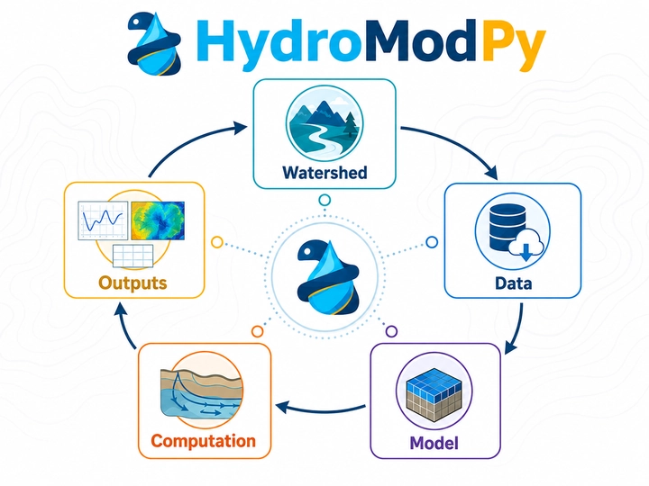
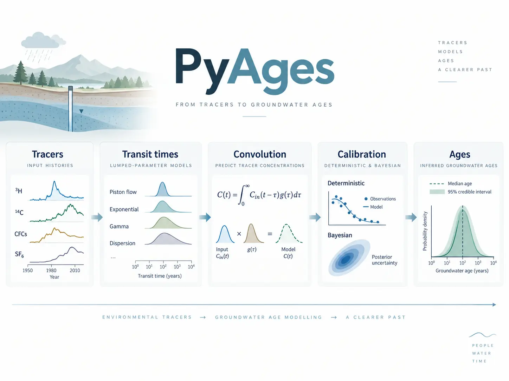

Codes versionnés
HydroModPy sur GitHub et distributions publiées sur PyPI.
Développements logiciels open source pour la modélisation hydrogéologique, l’analyse des traceurs et l’interprétation des temps de transfert.
HydroModPy est une boîte à outils Python pour construire, exécuter, calibrer et analyser de façon reproductible des modèles d’aquifères peu profonds à l’échelle des bassins versants.
Le workflow automatise la délimitation des bassins, la préparation des données spatiales et temporelles, la paramétrisation des modèles, les simulations MODFLOW, le suivi de particules et le transport de solutés, ainsi que l’export et la visualisation des résultats.
A. Gauvain et al. (2026) · Hydrology and Earth System Sciences, 30, 5571.

PyAges est un environnement Python open source pour modéliser et interpréter les âges des eaux souterraines à partir de traceurs environnementaux et de modèles à paramètres globaux (Lumped-Parameter Models, LPMs).
Il associe modèles de temps de transit, convolution et méthodes de calibration déterministes ou bayésiennes afin d’estimer les paramètres, leurs incertitudes et leurs limites d’identifiabilité.
J.-R. de Dreuzy, S. Leray & J. Marçais (2026) · soumis à Geoscientific Model Development.

Les logiciels sont complétés par des jeux de données, rapports et ressources destinés à rendre les méthodes et résultats réutilisables.
HydroModPy sur GitHub et distributions publiées sur PyPI.
Rapport scientifique final CYDRE, accessible directement sur le site.